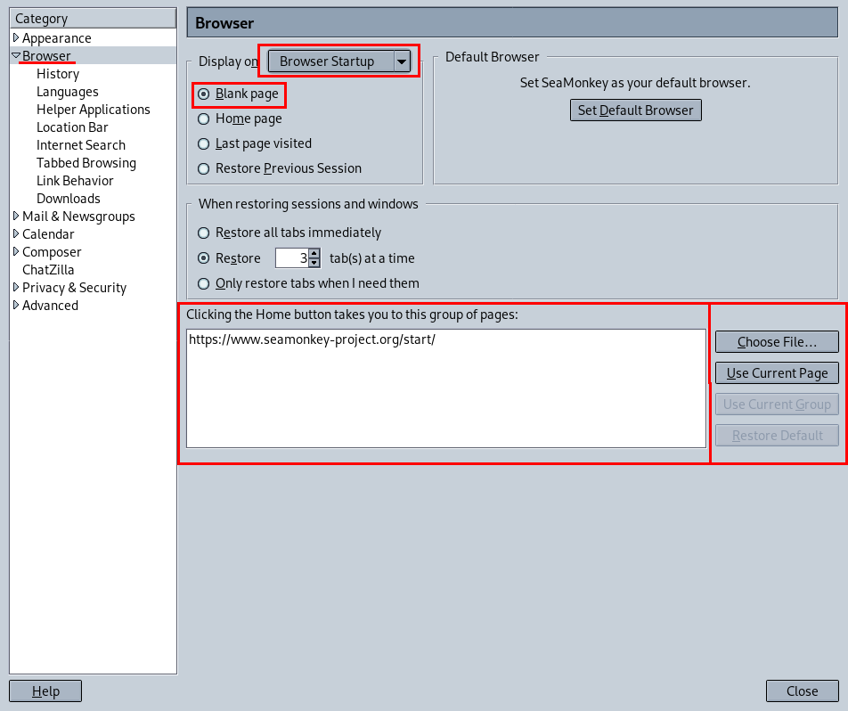
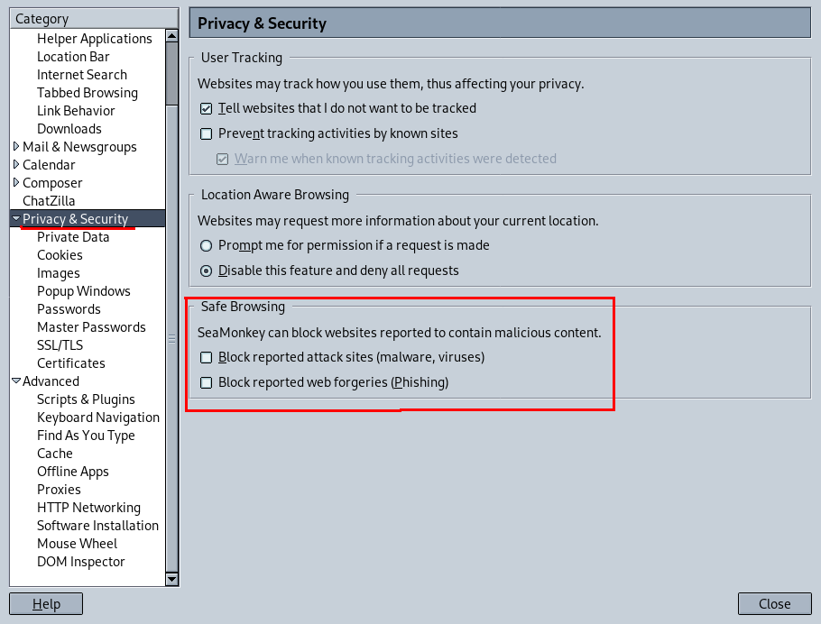
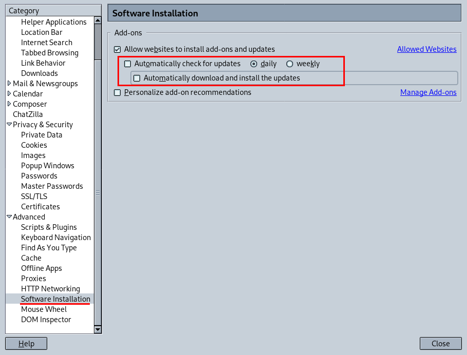

SeaMonkey
This guide was tested on version 2.53.5.
Spyware Level: High → Medium
Ideally disable internet connections before the first run of the browser.
In Edit→Preferences→Browser set "Blank page" for "Browser Startup" (or set your own homepage). Do the same for "New Window" and "New Tab" (which are also options in the "Display on" drop down menu).
In Edit→Preferences→Privacy & Security uncheck everything under "Safe Browsing".
You can disable automatic updates for add-ons in Edit→Preferences→Advanced→Software Installation, and unchecking "Automatically check for updates" and "Automatically download and install the updates".
